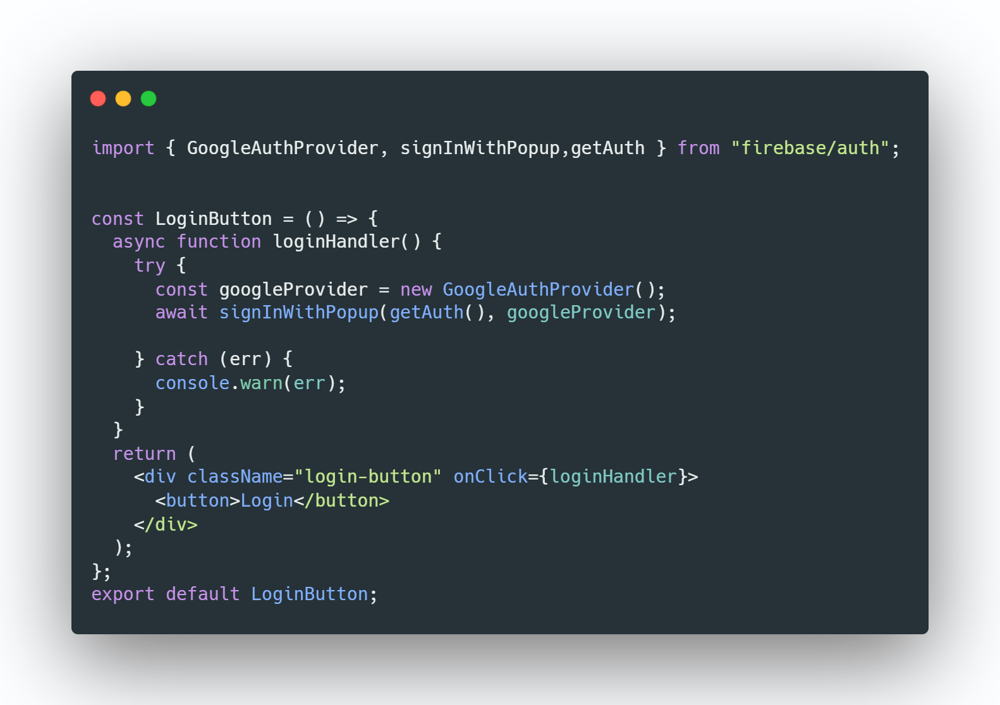

Get started with Firebase🔥
Firebase is a Backend-as-a-Service (BaaS). It is owned by Google
itself. It provides a complete backend for our web app. Firebase also provides SDK for mobile, web and
server-side languages. The services it offers are
- Authentication
- Firestore
- Storage
- Hosting
- Serverless functions
- Machine Learning
Authentication
Firebase provides us with many popular authentication providers like Google, Facebook, GitHub, etc.
So we don't have to worry about authentication. And it also makes user management easy. For using
firebase authentication use this link
Firebase Firestore
Firestore is a document-based database. So, all the data we store in it will be in collection and document
form. And we can also listen for real-time updates that happen in a particular collection or document.
For
using firebase firestore use this
link
Firebase Storage
Storage is a service in which we can save our media, it can be either images or docs. We can easily save
them. For
using firebase firestore use this
link
Rules for databases
Firebase also let us define rules for accessing the data in the database. We can define a rule like
only authenticated users can access a particular document or a collection.
Simple Demo for using authentication for react project
- Create a project for our web app in Firebase console
- copy the firebase config object
- Create a react project using cra
- Create a .js file and paste the config object
- Run the command
npm i firebase
- Create a Login button using the below code

- Whenever the user clicks the login the login handler will
be called and a popup for Google login will
opened for authentication
- But whenever the user reloads a page the user was logged out automatically. So to solve that we can use
context api and a function Firebase provides us

onAuthStateChanged is a function that will listen for any auth user changesuser value we passed as callback function in onAuthStateChanged will
provide the details about the user like
user id, email etc.,